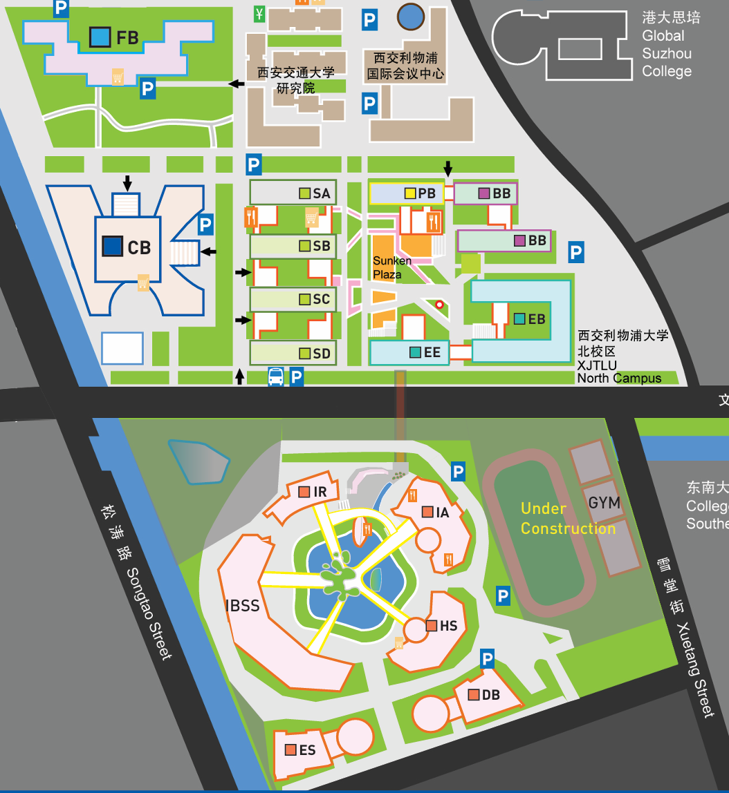

Explore different buildings on the interactive campus map, each with specific activities and events.

Trigger various events and activities by clicking on hotspots on the map.
Manage your various statuses, including academics, English proficiency, mental health, and physical health.
Your choices will affect these statuses, and you need to balance various indicators to achieve the best ending.
Various events will be randomly triggered in the game, and your choices will affect the game progress and ending.
Your IELTS score needs improvement. Would you like to join an IELTS preparation class?
Each choice will lead to different outcomes, affecting your status and future opportunities.
Based on your game progress and final status, you will get different endings.
Admitted to your dream university
Received Outstanding Graduate award
Balance between academics and life
Did not meet expected goals
Every choice you make will affect the final outcome. Strive for the best result!